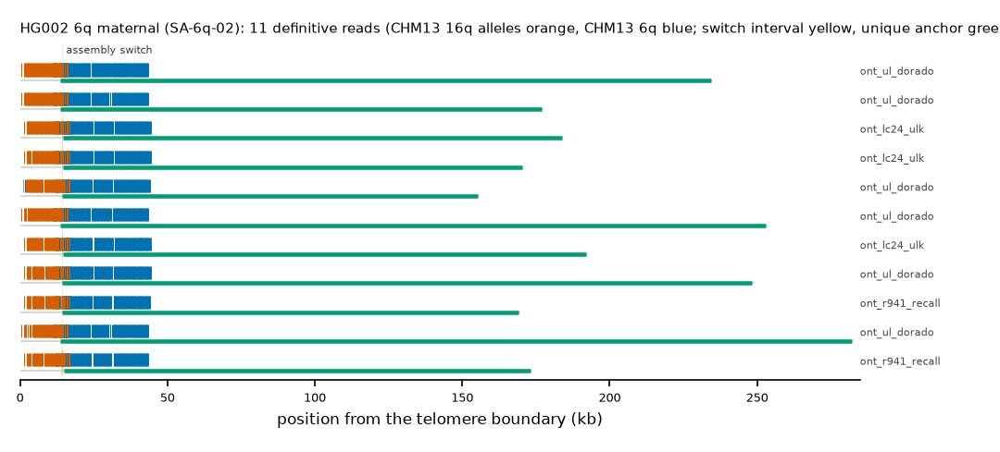

HG002 6q maternal: SA-6q-02
Claim HG002#2#chr6_MATERNAL#R. All claims
- cohort
- HG002 Q100
- individual
- HG002
- haplotype
- maternal
- arm
- 6q
- allele
- SA-6q-02 (foreign)
- model
- donor CHM13 16q, proximal CHM13 6q, recipient CHM13 6q, pattern DP
- claimed end(s)
HG002#2#chr6_MATERNAL#R- assembly switch
- 11,467 bp from the telomere boundary; own-window projection 14333-14428 bp
- v1 verdict
- confirmed (confirmed)
- definitive tier
- definitive (>= 2 datasets)
- reads
- 11 conclusive switch-concordant, 0 discordant, 0 contradicting, 137 consistent; 11 definitive (ont_lc24_ulk,ont_r941_recall,ont_ul_dorado)
- by tier
- definitive:11;consistent:137
- source
- HG002 Q100 v1.1 public read alignments (16 files; 12 independent datasets after molecule de-duplication)

Conclusive and contradicting reads (14)
195 further reads are consistent (switch test passed, but no terminal telomere, anchor or integrity); they are
listed in reads.tsv.gz. Switch: 95% interval in subtelomere coordinates (kb from the
telomere boundary) and projected on CHM13 6q. Each samtools command prints the read's record
from its public file (CRAM: add the CHM13 v2.0 FASTA as -T).
| read | dataset | tier | length | switch (subtelomere, kb) | switch on CHM13 | donor units / purity | proximal units / purity | anchor (CHM13, MAPQ, unique) | own-assembly best end | fetch |
|---|---|---|---|---|---|---|---|---|---|---|
b62a553c-0167-457a-a9ab-c2896898db58 | ont_lc24_ulk | definitive | 195,518 | 14.3-14.4 | chr6:172117595-172117690 | 85 / 0.93 | 170 / 0.94 | chr6:171937358-172117595, 60, 148.3 kb | HG002#2#chr6_MATERNAL#R (99.4%) ✓ | samtoolssamtools view -F 0x900 -X 'https://human-pangenomics.s3.amazonaws.com/T2T/HG002/assemblies/polishing/HG002/v1.1/mapping/ont_lc24_ulk/hg002v1.1_ont_lc24_ulk.pri.bam' 'https://human-pangenomics.s3.amazonaws.com/T2T/HG002/assemblies/polishing/HG002/v1.1/mapping/ont_lc24_ulk/hg002v1.1_ont_lc24_ulk.pri.bam.bai' 'chr6_MATERNAL:174698503-174742601' | awk -v r='b62a553c-0167-457a-a9ab-c2896898db58' '$1==r' |
47743462-7aed-4072-b185-58a903f079a1 | ont_lc24_ulk | definitive | 186,834 | 14.3-14.4 | chr6:172117595-172117690 | 87 / 0.93 | 171 / 0.94 | chr6:171945771-172117595, 60, 139.9 kb | HG002#2#chr6_MATERNAL#R (99.8%) ✓ | samtoolssamtools view -F 0x900 -X 'https://human-pangenomics.s3.amazonaws.com/T2T/HG002/assemblies/polishing/HG002/v1.1/mapping/ont_lc24_ulk/hg002v1.1_ont_lc24_ulk.pri.bam' 'https://human-pangenomics.s3.amazonaws.com/T2T/HG002/assemblies/polishing/HG002/v1.1/mapping/ont_lc24_ulk/hg002v1.1_ont_lc24_ulk.pri.bam.bai' 'chr6_MATERNAL:174698503-174742601' | awk -v r='47743462-7aed-4072-b185-58a903f079a1' '$1==r' |
ed6d8802-3665-4f79-9d80-9f7a4651128e | ont_lc24_ulk | definitive | 174,101 | 14.3-14.4 | chr6:172117595-172117690 | 86 / 0.93 | 171 / 0.94 | chr6:171959258-172117595, 60, 126.4 kb | HG002#2#chr6_MATERNAL#R (99.9%) ✓ | samtoolssamtools view -F 0x900 -X 'https://human-pangenomics.s3.amazonaws.com/T2T/HG002/assemblies/polishing/HG002/v1.1/mapping/ont_lc24_ulk/hg002v1.1_ont_lc24_ulk.pri.bam' 'https://human-pangenomics.s3.amazonaws.com/T2T/HG002/assemblies/polishing/HG002/v1.1/mapping/ont_lc24_ulk/hg002v1.1_ont_lc24_ulk.pri.bam.bai' 'chr6_MATERNAL:174698503-174742601' | awk -v r='ed6d8802-3665-4f79-9d80-9f7a4651128e' '$1==r' |
e948aa43-3401-4eac-9a61-76fb3cafe3a3 | ont_r941_recall | definitive | 180,923 | 14.1-14.9 | chr6:172116933-172117758 | 79 / 0.89 | 162 / 0.93 | chr6:171954447-172116933, 60, 131.2 kb | HG002#2#chr6_MATERNAL#R (92.2%) ✓ | samtoolssamtools view -F 0x900 -X 'https://human-pangenomics.s3.amazonaws.com/T2T/HG002/assemblies/polishing/HG002/v1.1/mapping/ont_methylation_recall_oct2024/03_08_22_R941_HG002.pri.bam' 'https://human-pangenomics.s3.amazonaws.com/T2T/HG002/assemblies/polishing/HG002/v1.1/mapping/ont_methylation_recall_oct2024/03_08_22_R941_HG002.pri.bam.bai' 'chr6_MATERNAL:174698503-174742601' | awk -v r='e948aa43-3401-4eac-9a61-76fb3cafe3a3' '$1==r' |
e4860b1e-b849-4a31-9560-08e3751e7151 | ont_r941_recall | definitive | 170,442 | 14.3-14.4 | chr6:172117595-172117689 | 81 / 0.93 | 170 / 0.93 | chr6:171960114-172117595, 60, 125.5 kb | HG002#2#chr6_MATERNAL#R (97.4%) ✓ | samtoolssamtools view -F 0x900 -X 'https://human-pangenomics.s3.amazonaws.com/T2T/HG002/assemblies/polishing/HG002/v1.1/mapping/ont_methylation_recall_oct2024/03_08_22_R941_HG002.pri.bam' 'https://human-pangenomics.s3.amazonaws.com/T2T/HG002/assemblies/polishing/HG002/v1.1/mapping/ont_methylation_recall_oct2024/03_08_22_R941_HG002.pri.bam.bai' 'chr6_MATERNAL:174698503-174742601' | awk -v r='e4860b1e-b849-4a31-9560-08e3751e7151' '$1==r' |
86668b7a-ff7e-42ed-98b6-75a3ab33edc9 | ont_ul_dorado | definitive | 282,971 | 13.5-13.6 | chr6:172117595-172117690 | 81 / 0.93 | 170 / 0.94 | chr6:171845276-172117595, 60, 240.4 kb | HG002#2#chr6_MATERNAL#R (98.9%) ✓ | samtoolssamtools view -F 0x900 -X 'https://human-pangenomics.s3.amazonaws.com/T2T/HG002/assemblies/polishing/HG002/v1.1/mapping/ont_r10_ul_dorado/hg002v1.1_ont_r10_ul_dorado.pri.bam' 'https://human-pangenomics.s3.amazonaws.com/T2T/HG002/assemblies/polishing/HG002/v1.1/mapping/ont_r10_ul_dorado/hg002v1.1_ont_r10_ul_dorado.pri.bam.bai' 'chr6_MATERNAL:174698503-174742601' | awk -v r='86668b7a-ff7e-42ed-98b6-75a3ab33edc9' '$1==r' |
7917d20d-324a-4b45-bf8a-581cd387bfbc | ont_ul_dorado | definitive | 253,790 | 13.6-13.7 | chr6:172117595-172117690 | 85 / 0.93 | 170 / 0.94 | chr6:171876459-172117595, 60, 209.2 kb | HG002#2#chr6_MATERNAL#R (99.2%) ✓ | samtoolssamtools view -F 0x900 -X 'https://human-pangenomics.s3.amazonaws.com/T2T/HG002/assemblies/polishing/HG002/v1.1/mapping/ont_r10_ul_dorado/hg002v1.1_ont_r10_ul_dorado.pri.bam' 'https://human-pangenomics.s3.amazonaws.com/T2T/HG002/assemblies/polishing/HG002/v1.1/mapping/ont_r10_ul_dorado/hg002v1.1_ont_r10_ul_dorado.pri.bam.bai' 'chr6_MATERNAL:174698503-174742601' | awk -v r='7917d20d-324a-4b45-bf8a-581cd387bfbc' '$1==r' |
8cecb9e5-659c-4b81-8867-675030a0c76e | ont_ul_dorado | definitive | 249,731 | 14.3-14.4 | chr6:172117595-172117690 | 85 / 0.93 | 169 / 0.93 | chr6:171881339-172117595, 60, 204.3 kb | HG002#2#chr6_MATERNAL#R (99.2%) ✓ | samtoolssamtools view -F 0x900 -X 'https://human-pangenomics.s3.amazonaws.com/T2T/HG002/assemblies/polishing/HG002/v1.1/mapping/ont_r10_ul_dorado/hg002v1.1_ont_r10_ul_dorado.pri.bam' 'https://human-pangenomics.s3.amazonaws.com/T2T/HG002/assemblies/polishing/HG002/v1.1/mapping/ont_r10_ul_dorado/hg002v1.1_ont_r10_ul_dorado.pri.bam.bai' 'chr6_MATERNAL:174698503-174742601' | awk -v r='8cecb9e5-659c-4b81-8867-675030a0c76e' '$1==r' |
0239ac49-3325-411e-a2fa-756ae92e5d00 | ont_ul_dorado | definitive | 235,166 | 13.5-13.6 | chr6:172117595-172117688 | 87 / 0.93 | 171 / 0.94 | chr6:171894417-172117595, 60, 191.2 kb | HG002#2#chr6_MATERNAL#R (99.2%) ✓ | samtoolssamtools view -F 0x900 -X 'https://human-pangenomics.s3.amazonaws.com/T2T/HG002/assemblies/polishing/HG002/v1.1/mapping/ont_r10_ul_dorado/hg002v1.1_ont_r10_ul_dorado.pri.bam' 'https://human-pangenomics.s3.amazonaws.com/T2T/HG002/assemblies/polishing/HG002/v1.1/mapping/ont_r10_ul_dorado/hg002v1.1_ont_r10_ul_dorado.pri.bam.bai' 'chr6_MATERNAL:174698503-174742601' | awk -v r='0239ac49-3325-411e-a2fa-756ae92e5d00' '$1==r' |
36b78c0a-1c19-4141-a3c5-9eb806147a97 | ont_ul_dorado | definitive | 177,614 | 13.5-13.6 | chr6:172117595-172117690 | 87 / 0.93 | 171 / 0.94 | chr6:171951629-172117595, 60, 134.0 kb | HG002#2#chr6_MATERNAL#R (99.1%) ✓ | samtoolssamtools view -F 0x900 -X 'https://human-pangenomics.s3.amazonaws.com/T2T/HG002/assemblies/polishing/HG002/v1.1/mapping/ont_r10_ul_dorado/hg002v1.1_ont_r10_ul_dorado.pri.bam' 'https://human-pangenomics.s3.amazonaws.com/T2T/HG002/assemblies/polishing/HG002/v1.1/mapping/ont_r10_ul_dorado/hg002v1.1_ont_r10_ul_dorado.pri.bam.bai' 'chr6_MATERNAL:174698503-174742601' | awk -v r='36b78c0a-1c19-4141-a3c5-9eb806147a97' '$1==r' |
0a026a59-df8d-41bb-a712-ce3d736a5899 | ont_ul_dorado | definitive | 156,178 | 14.2-14.3 | chr6:172117595-172117690 | 85 / 0.92 | 171 / 0.94 | chr6:171974126-172117595, 60, 111.5 kb | HG002#2#chr6_MATERNAL#R (99.2%) ✓ | samtoolssamtools view -F 0x900 -X 'https://human-pangenomics.s3.amazonaws.com/T2T/HG002/assemblies/polishing/HG002/v1.1/mapping/ont_r10_ul_dorado/hg002v1.1_ont_r10_ul_dorado.pri.bam' 'https://human-pangenomics.s3.amazonaws.com/T2T/HG002/assemblies/polishing/HG002/v1.1/mapping/ont_r10_ul_dorado/hg002v1.1_ont_r10_ul_dorado.pri.bam.bai' 'chr6_MATERNAL:174698503-174742601' | awk -v r='0a026a59-df8d-41bb-a712-ce3d736a5899' '$1==r' |
b62a553c-0167-457a-a9ab-c2896898db58 | ont_q28_lc24 | definitive (not counted: duplicate molecule) | 195,518 | 14.3-14.4 | chr6:172117595-172117690 | 85 / 0.93 | 170 / 0.94 | chr6:171937358-172117595, 60, 148.3 kb | HG002#2#chr6_MATERNAL#R (99.4%) ✓ | samtoolssamtools view -F 0x900 -X 'https://human-pangenomics.s3.amazonaws.com/T2T/HG002/assemblies/polishing/HG002/v1.1/mapping/ont_q28_lc24/hg002v1.1_ont_q28_lc24.bam' 'https://human-pangenomics.s3.amazonaws.com/T2T/HG002/assemblies/polishing/HG002/v1.1/mapping/ont_q28_lc24/hg002v1.1_ont_q28_lc24.bam.bai' 'chr6_MATERNAL:174698503-174742601' | awk -v r='b62a553c-0167-457a-a9ab-c2896898db58' '$1==r' |
47743462-7aed-4072-b185-58a903f079a1 | ont_q28_lc24 | definitive (not counted: duplicate molecule) | 186,834 | 14.3-14.4 | chr6:172117595-172117690 | 87 / 0.93 | 171 / 0.94 | chr6:171945771-172117595, 60, 139.9 kb | HG002#2#chr6_MATERNAL#R (99.8%) ✓ | samtoolssamtools view -F 0x900 -X 'https://human-pangenomics.s3.amazonaws.com/T2T/HG002/assemblies/polishing/HG002/v1.1/mapping/ont_q28_lc24/hg002v1.1_ont_q28_lc24.bam' 'https://human-pangenomics.s3.amazonaws.com/T2T/HG002/assemblies/polishing/HG002/v1.1/mapping/ont_q28_lc24/hg002v1.1_ont_q28_lc24.bam.bai' 'chr6_MATERNAL:174698503-174742601' | awk -v r='47743462-7aed-4072-b185-58a903f079a1' '$1==r' |
ed6d8802-3665-4f79-9d80-9f7a4651128e | ont_q28_lc24 | definitive (not counted: duplicate molecule) | 174,101 | 14.3-14.4 | chr6:172117595-172117690 | 86 / 0.93 | 171 / 0.94 | chr6:171959258-172117595, 60, 126.4 kb | HG002#2#chr6_MATERNAL#R (99.9%) ✓ | samtoolssamtools view -F 0x900 -X 'https://human-pangenomics.s3.amazonaws.com/T2T/HG002/assemblies/polishing/HG002/v1.1/mapping/ont_q28_lc24/hg002v1.1_ont_q28_lc24.bam' 'https://human-pangenomics.s3.amazonaws.com/T2T/HG002/assemblies/polishing/HG002/v1.1/mapping/ont_q28_lc24/hg002v1.1_ont_q28_lc24.bam.bai' 'chr6_MATERNAL:174698503-174742601' | awk -v r='ed6d8802-3665-4f79-9d80-9f7a4651128e' '$1==r' |
Files
CRAM/BAM on CHM13 v2.0, BAM on the person's own assembly windows and the window FASTA: release asset subtel_read_evidence_v1_HG002_Q100.tar.gz, directory read_evidence_v1/HG002_Q100/HG002_2_chr6_MATERNAL_R/ (downloads).
Re-derive this verdict
git clone https://github.com/jlanej/human-subtelomere-atlas && cd human-subtelomere-atlas
evidence/replicate_claim.sh 'HG002#2#chr6_MATERNAL#R'The script fetches the cited reads from the public source by region and read ID, re-runs the frozen criteria and compares every per-read and claim verdict with this page (details).